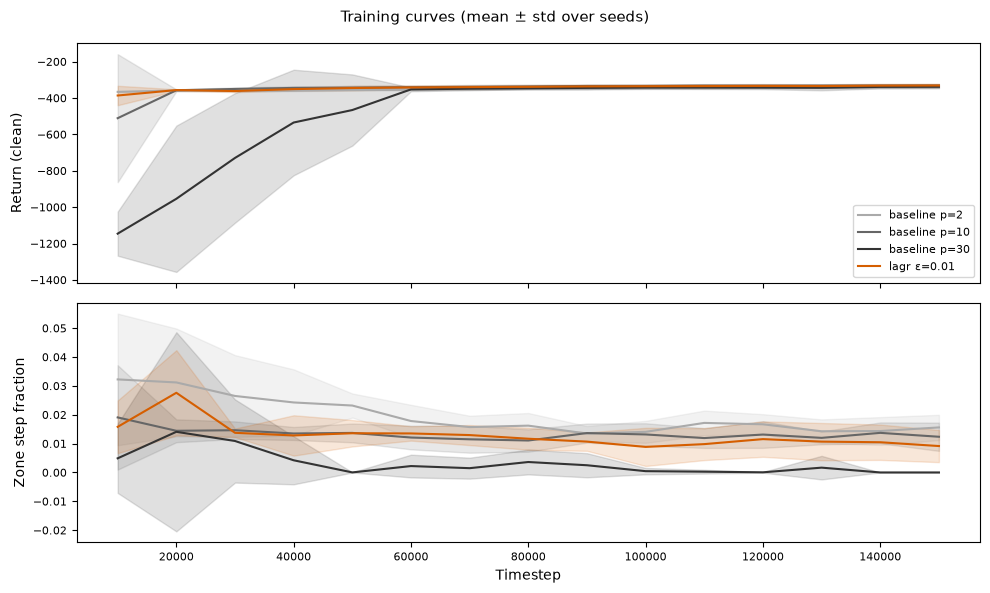
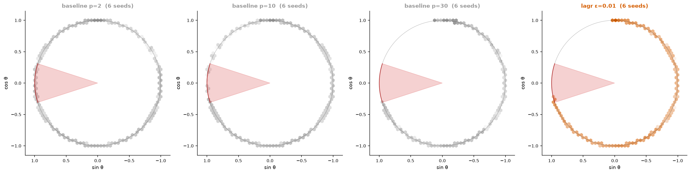

Machbarkeitsanalyse mit Referenz-Policy (E1 vs. E3), Umstellung auf binären KDE-Cost, systematische 6-Seed Runs und neues Tooling zur Trajectory-Visualisierung.
Eine Zonenbesuchsrate nahe 0,88 bedeutet, dass ungefähr 88 % der Bewertungsepisoden das verbotene Winkelintervall mindestens einmal betreten.
Die Referenz lernt nicht aus einer Belohnung. Sie sucht zuerst eine zonenfreie Aktionsfolge, spielt diese ab und stabilisiert das Pendel oben.
Optionaler Tastaturmodus: Mit --keyboard steuern die Pfeiltasten links/rechts das Drehmoment. Dieser Modus dient nur zum manuellen Testen und ist nicht Teil der automatischen Referenz-Policy.
Dieselbe Pendeldynamik führt zu unterschiedlichen Ergebnissen, weil E3 das verbotene Winkelintervall vergrößert.
| Umgebung | Verbotene Zone | Referenzerfolg | Zonenbesuche | Machbarkeitsfazit |
|---|---|---|---|---|
| E1 | 72°–108° | 1,0 | 0,0 | Machbar |
| E3 | 45°–135° | 1,0 | 1,0 | Kein zonenfreier Pfad gefunden |
Nach weiterer Analyse hat sich gezeigt: Der kontinuierliche KDE-Cost 1 − d/d_ref war fast überall > 0. Der Unterschied zwischen Zone und sicherem Pfad war zu gering — die Policy hatte kein klares Signal, die Zone zu meiden.
cost = clip(1 − density / d_ref, 0, 1)
Cost überall hoch (~0.7) — auch auf sicherem Pfad
→ Kein klares Signal, Zone vs. sicher kaum unterscheidbar
cost = 1{density < τ} mit τ = 0.025
Sicherer Pfad: cost = 0 — Zone: cost = 1
→ Klares Signal, Policy lernt Zone zu meiden
runs/vis/EvalCallback loggt während Training zu train_metrics.csv (Return, Zone Frac, Upright Rate) und speichert Trajectory-Snapshots pro Checkpoint. WeightUpdateCallback loggt α zu alpha.csv.


zone_step_frac = Anteil der Steps in der Zone pro Episode. Besser als binäre Visit Rate, aber löst das Grundproblem nicht.
| Method | Visit Rate | Step Frac | Return |
|---|---|---|---|
| baseline p=2 | 100.0% | 1.57% | −342.3 |
| baseline p=10 | 100.0% | 1.25% | −331.0 |
| baseline p=30 | 13.0% | 0.07% | −338.0 |
| lagr ε=0.01 | 83.3% | 0.92% | −331.2 |
Mittelwerte über alle 6 Seeds. p=30 hat niedrigste Zone-Exposure, aber auf Kosten von Return. Lagrangian erreicht ähnlichen Return wie p=10 bei weniger Zone-Steps.
Mit binärem Cost lernen sowohl p=30 (Visit Rate 13%) als auch Lagrangian ε=0.01 (Visit Rate 83%, Step Frac 0.92%) die Zone aktiv zu meiden. Die KDE-basierte Metrik blutet jedoch in die Zone.